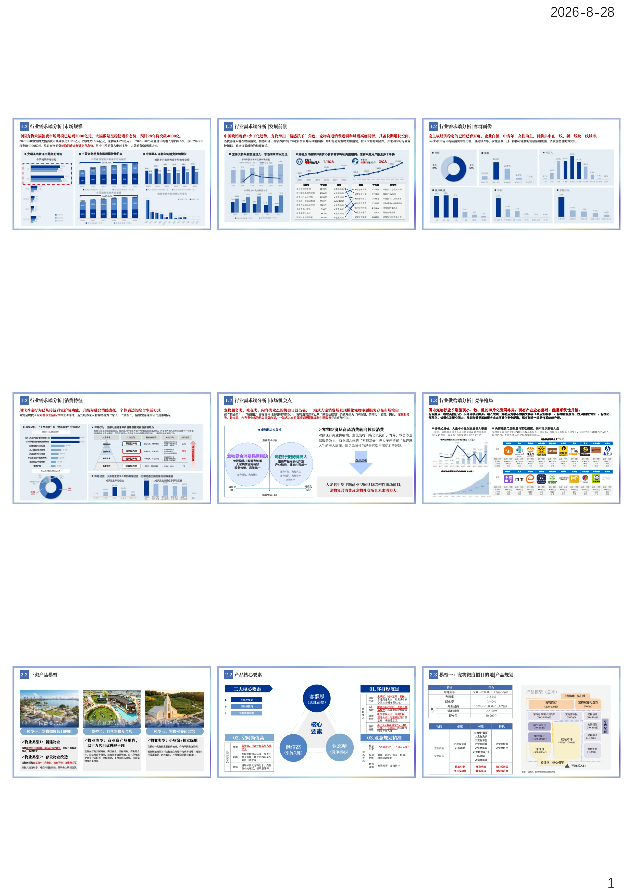
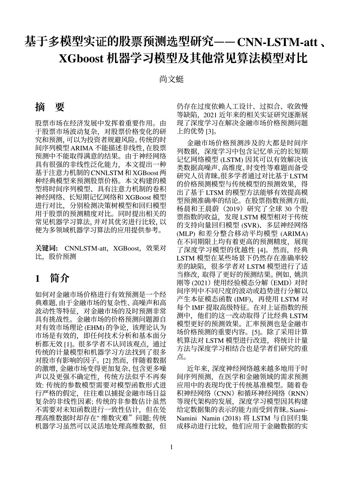

机器学习 97 · Python 93
数据挖掘 92、区块链 94、财务报表分析 93。 以数据科学与金融工程的交叉训练，支撑起对业务问题的量化拆解能力。
作品集记录我在快手、安克创新等产品与运营实践，记录从需求拆解、产品设计及运营迭代全流程 —— 核心能力是围绕用户诉求与业务目标，依托数据分析驱动需求拆解、竞品分析、用户研究、产品设计、运营策略等。
我是尚文蜓，保研暨南大学金融科技硕士、辽宁大学金融学本科双一流专业。中共党员，连续两年获国家励志奖学金，获全国大学生数学建模竞赛省一等奖。
数据挖掘 92、区块链 94、财务报表分析 93。 以数据科学与金融工程的交叉训练，支撑起对业务问题的量化拆解能力。
高数上下均满分。主修计量经济学 100、概率论 94、宏观经济学 97、微观经济学 96、会计学 92。
具备战略与投资规划、产品设计、运营增长经验；基于全局视角穿透各业务逻辑，进行需求拆解、用户研究、竞品对标，完成财务测算与产品设计，输出运营方案，并以业务洞察、用户反馈、数据分析驱动产品与策略迭代。
持有影像设备（微单 / 无人机 / 运动相机 / Pocket 等）40 余种电子产品，喜欢研究底层架构与逻辑，掌握整机软硬件核心规格，持续追踪技术创新与产品演进，能够从技术角度及用户需求出发理解对比产品体验。
以下四项能力贯穿过去所有工作 —— 用综合能力，支撑产品设计与运营优化。
独立完成从用户需求洞察到功能设计落地的全链路闭环：业务场景拆解、用户路径梳理、功能方案输出、原型设计、PRD 撰写。让功能有用户价值、可被理解、可被开发、可被验证。
SQL 取数分析、Tableau 看板搭建；用 ROI / 转化率 / 漏斗等指标推动产品迭代。完成数据监控 → 策略调整。
深度拆解行业底层逻辑，贯通市场‑竞品‑用户‑产品全链条挖掘机会点；完成需求研判、市场进入策略与商业化方案，输出可落地的分析与策略文档。
主动探索提高工作效率，开发竞品分析、策划报告生成等 Agent，基于 Claude Code、Codex 等 AI 工具，将业务拆解为标准化工作流，多 Agent 协作完成需求拆解、信息采集、分析推理、报告产出等全链路执行，并设计门禁机制、固化基线、自行回测迭代，保障输出成果质量标准化统一；单份报告节省人工整理工作时长 5 小时。
按「安克产品设计 → 快手广告投放 → 碧桂园投资研策 → 独立项目」组织。点击任意设计图可全屏查看，多页文档通过左右箭头翻页。
围绕 C 端补贴投放策略，设计并推进 A/B 实验，以实验数据驱动补贴策略的调整与优化。

宠物经济等市场研究，明确用户前沿消费趋势，设计产品模型与运营方案；市场分析、竞品分析、客群分析，进行产品定位策划，并制定产品市场运营方案。

将分散的业务数据整合为可视化看板，支撑日常经营监控与决策判断。

以 CNN-LSTM 时序模型对股票价格进行预测建模，完成从数据预处理、特征工程到模型训练与效果评估的完整流程。

独立完成进销存系统的功能设计与实现，覆盖商品、库存、订单等核心业务模块。

山河之间，世界尽展。这些是 2024 — 2026 年用微单与无人机在路上留下的精彩片段。


工作之外，是持续输入的来源 —— 影像、硬件、阅读与行走。
持有影像设备（微单 / 无人机 / 运动相机 / Pocket 等）40 余种电子产品。喜欢研究底层架构与逻辑，掌握整机软硬件核心规格，持续追踪技术创新与产品演进，能够从技术角度及用户需求出发理解对比产品体验。
以微单与无人机记录山河之间的片段，长期保持对画面结构、光线与叙事的训练。
持续跟踪消费、科技与金融领域的行业变化，保持对商业底层逻辑的好奇。
连续两年获国家励志奖学金；以数学建模与课程成果支撑起量化分析的基本功。
队长身份组织分工与计划推进，负责数据建模、论文撰写及答辩；用 Stata 进行熵权法 TOPSIS 建模及线性约束规划求解，解决物流订购的最优成本问题。
作为团队负责人进行论文撰写及答辩；联合计算机学院同学实现基于 LSTM 深度学习算法模型的股价时间序列预测，成功预测 50 支股票一个月内行情。
负责产品商业策划书撰写及项目答辩；与计算机学院联合完成老旧照片修复网站的编程与商业化实现。
凭借较好的金融专业知识与数据分析能力，实习结束后被原公司邀请担任技术专家，独立完成企业客户的市场分析、经营管理、投资发展、业务发展等方向的分析，输出业务发展规划与投资策略报告。
连续获得各学期校奖学金，并获评千优百佳学生。
高等数学上 100 · 机器学习 97 · Python 93 · 数据挖掘 92 · 高等数学下 100 · 概率论与数理统计 94 · 区块链技术 94 · 财务报表分析 93

 02
02 03
03 04
04
 02
02 03
03 04
04
 02
02 03
03 04
04 03
03
 02
02
 02
02 03
03 04
04 05
05 06
06
 02
02 03
03 04
04 05
05 06
06